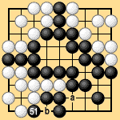
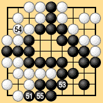
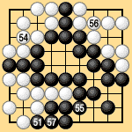

| 6.3 Reinforcement Questions (1) |
|---|
| After Black takes the ko at 51 in Dia. 6-5-1, he has more ko threats and cannot be forced to connect at 'b,' raising the question of whether he has to reinforce at 'a' or not. Around 1930 there was an argument about this between Honinbo Shusai and Kubomatsu Katsukiyo (then 6 dan, later 8 dan). Shusai held that Black did not have to connect at 'b,' so naturally he did not have to reinforce at 'a,' and this became the working rule at the Nihon Kiin. After the problem mentioned earlier in the Go-Iwamoto game, however, and the indirect ko problem in the Go-Takagawa game, the present Nihon Kiin rule was adopted, which is that Black has to reinforce at both 'a' and 'b' regardless of the number of ko threats. Under present Nihon Kiin rules the result in Dia. 6-5-1 is a draw. Shusai would have said that Black wins by two points. |
|  |
| Dia. 6-5-1 (51) |
|---|
| Under area rules III the game ends as in Dia. 6-5-2. White 52 passes, making Black 51 the last competitive move. Black connects at 53, White connects at 54, Black connects at 55, White passes, and Black passes, ending the game. Black's score is 28 stones plus 14 points of territory for a total 42. White's score is 25 stones plus 14 points of territory for a total 39. Since White passed first, the half-point rule makes Black's score 41 1/2 and White's score 39 1/2. Black wins by two points. |
|  | |
|
| Under territory rules I the game ends as shown in Dia. 6-5-3. After Black 51, White 52 and Black 53 pass, establishing the preliminary end. After White 54 to Black 57 White and Black both pass again, ending the game. Black wins by two points, which agrees with area rules III and Shusai's opinion. (White has lost one prisoner at 57.) |
|  | |
|
| Under area rules II the game ends in the same way as under area rules III but the half-point rule does not apply, so Black wins by three points. |